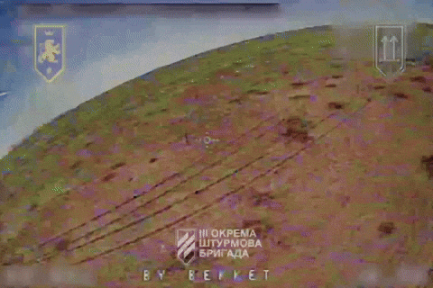

Get FPV drone strike video featuring your text
You can add a custom text (e.g. "BY BEKKET" on the video ⬆️) to the FPV drone's On Screen Display. This text integrates with the original video stream that pilots use to operate the drone.The footage of the successful strike is then shared on the military units’ official social media accounts. This way anyone can verify its authenticity.
FPV drones pilots
The 1st Assault Platoon "Galician" of the 3rd Separate Assault Brigade, Armed Forces of Ukraine.FPV drones manufacturer
The FPV production team of the Ukrainian Messershmits — an UAV research lab based in Kyiv, Ukraine. We manufacture drones for the Galician Platoon. It enables us to configure On Screen Display data of the drones we deliver.How to get the strike video featuring your text
1. Choose a text that is no longer than 16 characters, that you'd like to add in the drone footage. Characters available for selection are listed here.{kind=link}
2. Contact us and confirm that the text you've chosen is applicable.
3. Donate $2000 USD for a video using one of the available options. Send us a proof of the transaction.
4. We will send you the video once it is published by the pilots. It can take between 2 to 10 months in the worst case scenario. Status updates and links also provided in the table below.
Video publication statuses
| CUSTOM TEXT | PROOF PUBLISHED |
FULL VIDEO PUBLISHED |
DIRECT DOWNLOAD |
|---|---|---|---|
| BY BEKKET | [1] | [1], [2] | MP4 | GIF |
| FCK PTN. WH | WIP | WIP | WIP |
| BY PONCHIK | WIP | WIP | WIP |
{kind=link}
Contact us
- Telegram: @uamesser_video- E-mail: video@uamesser.com
How to donate
PayPal: sidletska.polina@gmail.comUSDT (ERC20): 0xcbb9d844fb3d6eca72c12695c5e87b0a0c672396
USDT (TRC20): TB4h7HgdyJPH9ZZbnRfXXFCEH1DeDBFygq
BTC: 137dr8ZhTWxt8FNxVBnqFQfjX3yT4ftzWJ
MONERO: 85LD8j5iGhFF1VfMDegecadVxC3JmDHPPVQaL8k2wUHJdokk2gJ4f8N54vBvRnhhp7XgHnGu9WNUZD7Aaw433Ugz2NMqkH9
Any donation is welcome. Donations under $2000 USD will be used for the FPV team research and development.
Follow us
- Telegram: @galician_platoon, @uamesser, @uamesser_fpv- Tiktok: @uamesser, @uamesser_fpv